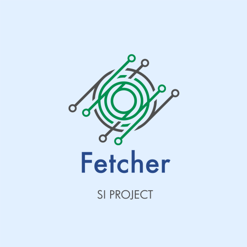

Scholar Fetcher Rural

Abaixo na Query de busca digite sua pesquisa de artigos científicos ao lado em Quantidade de resultados Digite o número de artigos que quer receber dessa busca. Será processada e retornará um pdf com os artigos relacionado a query digitada e suas respectivas datas de criação.
Sobre Nós
Scholar Fetcher é um projeto desenvolvido pelos alunos da UFRRJ do curso de sistemas de informação, Isabelle Rizzo e Max Felipe com o objetivo de aprender o funcionamento de container dockers e do kafka e como essas duas tecnologias podem trabalhar juntas.